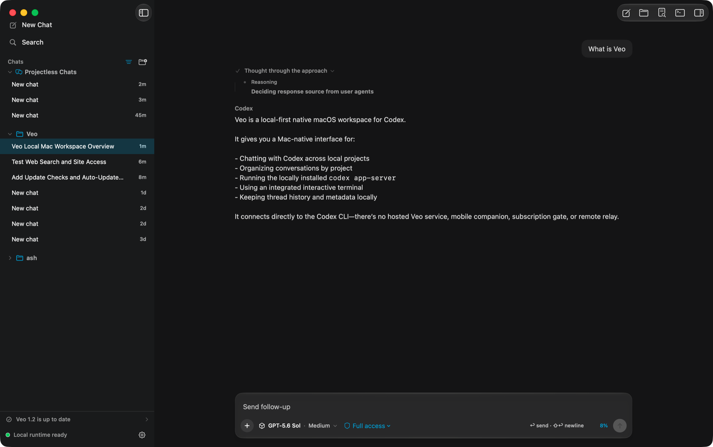

A native Mac workspace
for Codex.
Veo turns the Codex CLI you already have installed into a focused macOS app — every project in one sidebar, a timeline that keeps its shape, and a real terminal beside the conversation.

Your CLI, your projects,
your machine.
There is no Veo cloud between the app and Codex. Veo launches codex app-server directly and speaks newline-delimited JSON-RPC over stdin and stdout. No hosted backend, no relay, no subscription, no bundled credentials.
Built for the way work actually spreads out.
One workspace, every repo
Chats from all your local repositories stay visible in a single sidebar. Selecting a chat restores its recorded working directory — without filtering the rest of your work away.
A timeline that holds its shape
Responses, reasoning, plans, commands, file changes, and tool calls stream in without flattening or reordering. Late deltas merge into the row they belong to.
A composer that knows the project
Pick the model, reasoning effort, service tier, and access mode the runtime reports. Mention project files, attach context, queue follow-ups, and type / for native commands.
A real docked terminal
A SwiftTerm-backed interactive PTY — not a command box. Shell editing, tabs, live resizing, and full-screen TUIs in the current project, one ⌃` away.
Mac-native throughout
System appearance or Light/Dark, a Veo accent color, Solid / Mica / Liquid Glass surfaces, real toolbars, menus, Finder integration, and a menu bar extra.
Chats that clean up after themselves
Start a projectless chat instantly in an app-managed workspace, mark it temporary before the first turn, and let it delete itself — rows, forks, and scratch folder together.
Explicit by default.
Veo defaults to workspace-scoped writes and never silently broadens a chat to your whole disk. Full access is always a choice you make, and may be restricted further by managed Codex requirements.
- Approvals, permission prompts, and MCP forms are answered inline in the timeline.
- Claude and Codex CLI commands in the terminal are gated separately from ordinary shell commands.
- Full-access bypass flags for agent CLIs are opt-in and off by default.
| Mode | Filesystem access |
|---|---|
| Read only | Inspect files and local state, no workspace writes |
| Workspace | Write inside the selected project and approved temporary locations |
| Full access | Operate outside the project without filesystem sandboxing |
Keep work under version control, and read approval requests before accepting them.
Keyboard first.
Slash commands: /model · /permissions · /review · /compact · /fork · /diff · /terminal · /usage
Bring your own Codex.
Install the app, point it at a project, and keep working. Veo needs nothing but the CLI you already have.